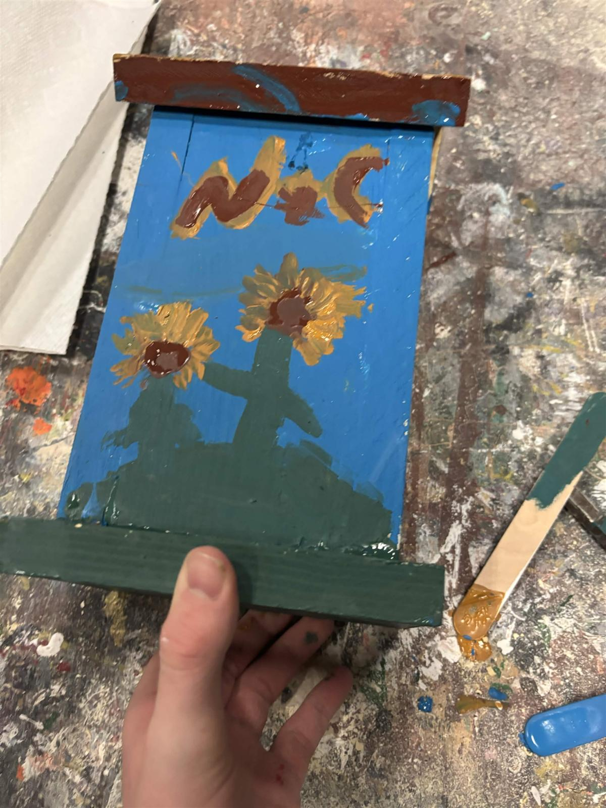
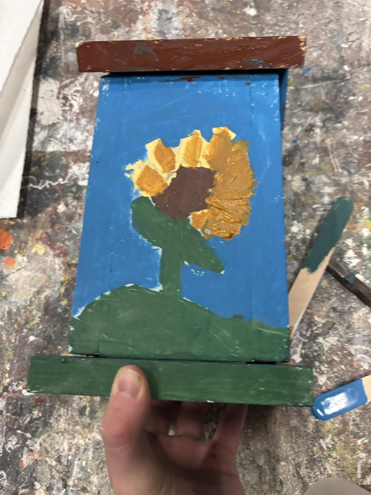
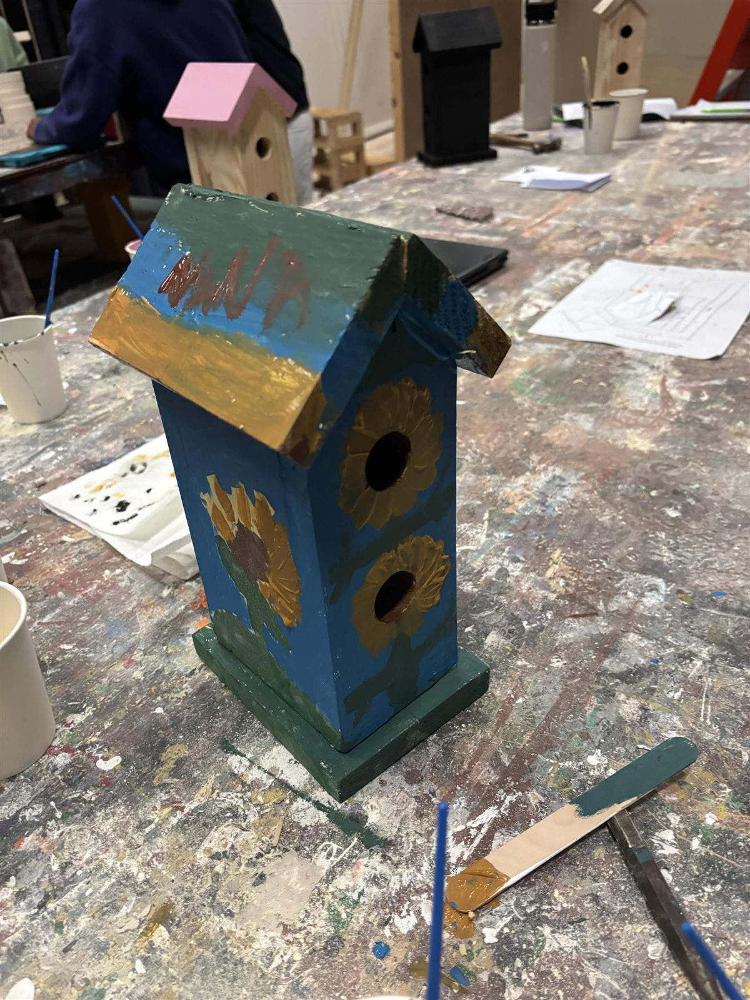
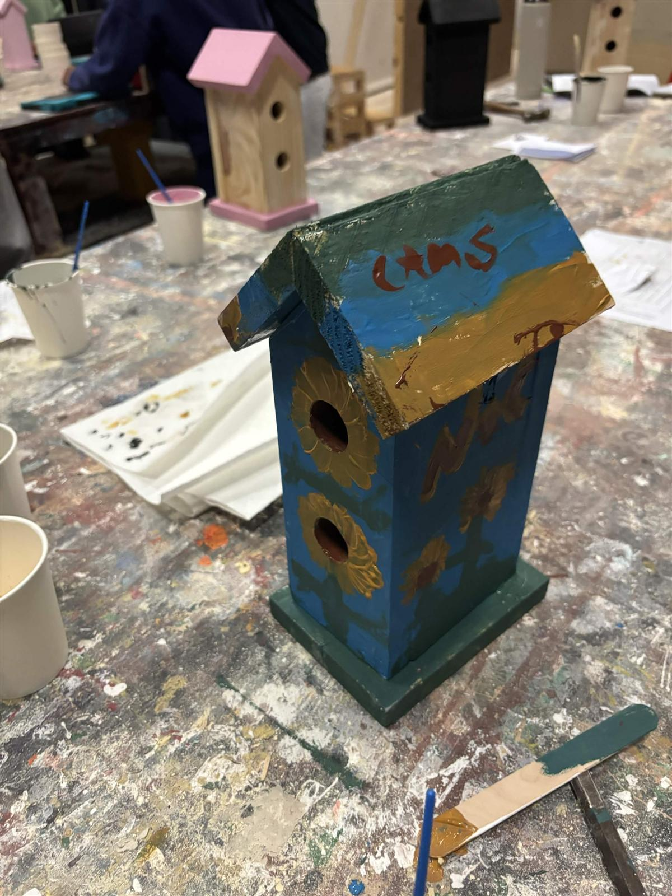
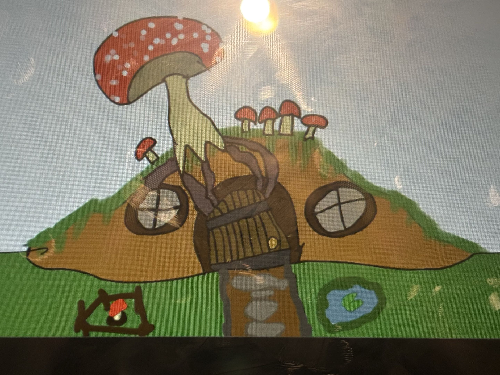
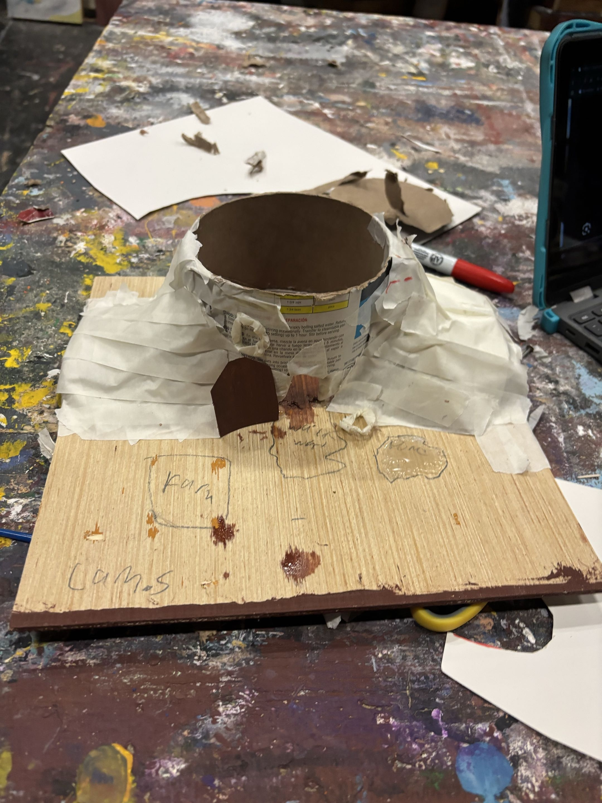
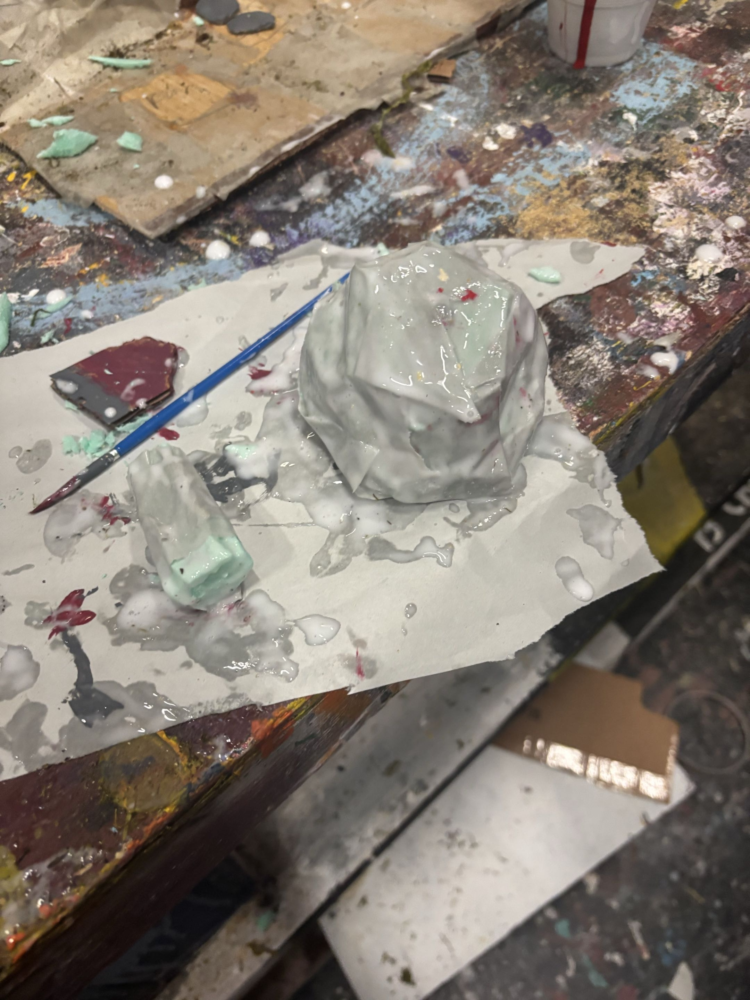
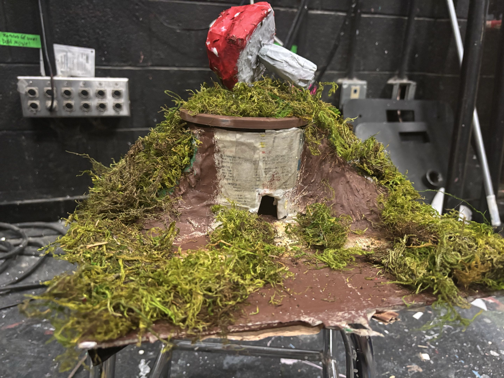
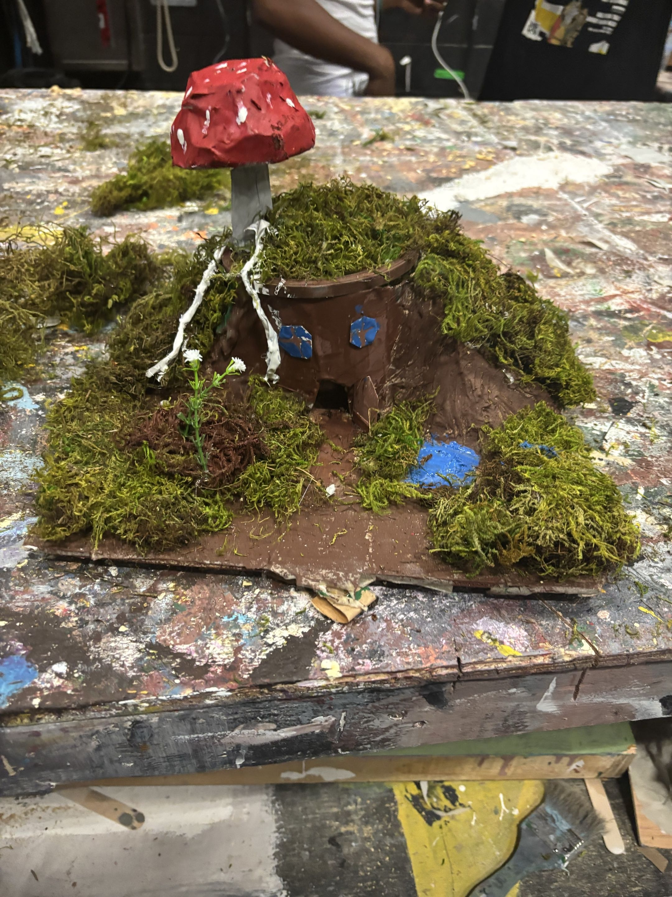
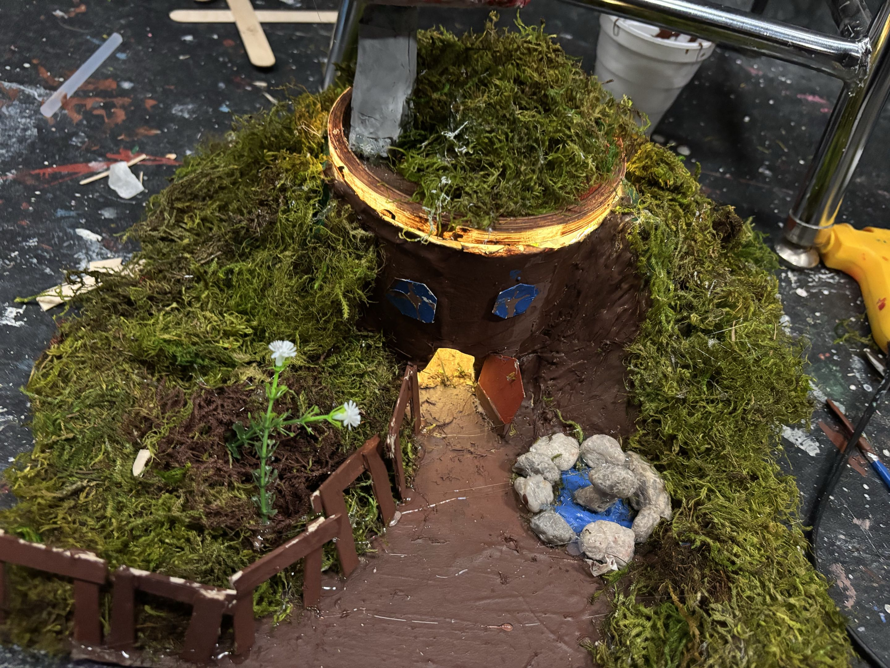

LIGHTING & SOUND
- I learned that different fixtures do completely different things — an ERS gave me a sharp, focused beam I could shape, while a Fresnel gave me a soft wash I could spread. Knowing which one to use changed the whole look of a scene.
- I learned that where a light comes from matters just as much as the light itself — the same fixture at leg height looked threatening, at chest height looked natural, and behind the subject turned them into a silhouette. Angle is a design choice, not just a technical one.
- I learned how all the parts of a lighting system connect to each other — the dimmer rack feeds the fixtures, the board controls the dimmer rack, channels organize the board, and cables carry it all. Once I understood the chain, troubleshooting actually made sense.
- I learned that writing a cue sheet means thinking about lighting as storytelling with a timer — every cue belongs to a specific moment in the show, and hitting it even a second off changes how the scene feels to the audience.
- I learned that calling cues live is completely different from designing a show on paper. I had to track the script, listen to what was happening onstage, and hit every cue exactly on time with no room for mistakes.
"Before this assignment, the lighting rig above a stage was just a collection of metal fixtures to me. The Lighting Textbook changed that completely. Going through each tool — from the ERS and its sharp, controllable beam, to the soft wash of a Fresnel, to the way a simple gel can transform the entire mood of a scene — I started to see the lighting system as a language. Every piece has a purpose, and every piece talks to every other piece. The dimmer rack feeds the fixtures, the board talks to the dimmer rack, the channels organize the board, and the cables carry it all. Learning how a two-fer can double your output, or how a top hat can clean up a messy spill, showed me that theatrical lighting is as much about problem-solving as it is about artistry."
 GoboA metal or glass template inserted into an ERS to project patterns, shapes, or textures onto a surface.
GoboA metal or glass template inserted into an ERS to project patterns, shapes, or textures onto a surface.
 Pin ConnectorA stage-standard electrical connector used to link lighting fixtures to dimmer circuits.
Pin ConnectorA stage-standard electrical connector used to link lighting fixtures to dimmer circuits. Top HatA cylindrical tube that attaches to a fixture to cut down light spill and keep beams more controlled.
Top HatA cylindrical tube that attaches to a fixture to cut down light spill and keep beams more controlled. ChannelA numbered address on the lighting board that controls the intensity of one or more assigned fixtures.
ChannelA numbered address on the lighting board that controls the intensity of one or more assigned fixtures. StriplightsLong multi-bulb fixtures used to wash backdrops or cycloramas with broad, even color.
StriplightsLong multi-bulb fixtures used to wash backdrops or cycloramas with broad, even color. GelA thin sheet of colored plastic placed in front of a fixture to tint the beam with a specific color.
GelA thin sheet of colored plastic placed in front of a fixture to tint the beam with a specific color. Dimmer RackA rack of electronic dimmers that regulate the electrical power — and therefore the brightness — of each circuit.
Dimmer RackA rack of electronic dimmers that regulate the electrical power — and therefore the brightness — of each circuit. ParnelA hybrid fixture combining a PAR's wide wash with a Fresnel's adjustable beam, producing a medium spread of soft light.
ParnelA hybrid fixture combining a PAR's wide wash with a Fresnel's adjustable beam, producing a medium spread of soft light. Two-FerA Y-shaped cable that splits one dimmer circuit into two, letting two fixtures run on the same channel.
Two-FerA Y-shaped cable that splits one dimmer circuit into two, letting two fixtures run on the same channel. CableThe wiring that carries power from the dimmer rack to the fixtures, typically using stage pin or Edison connectors.
CableThe wiring that carries power from the dimmer rack to the fixtures, typically using stage pin or Edison connectors. ScoopA simple bowl-shaped floodlight that produces a soft, unfocused wash — great for general color fills.
ScoopA simple bowl-shaped floodlight that produces a soft, unfocused wash — great for general color fills.
 Lighting BoardThe main control console used to program, store, and execute all lighting cues during a performance.
Lighting BoardThe main control console used to program, store, and execute all lighting cues during a performance. ERSEllipsoidal Reflector Spotlight — the most common theatrical fixture, producing a sharp, focusable beam that accepts gobos and shutters.
ERSEllipsoidal Reflector Spotlight — the most common theatrical fixture, producing a sharp, focusable beam that accepts gobos and shutters. FresnelA fixture with a stepped lens that creates a soft-edged, adjustable beam — ideal for area lighting and smooth color washes.
FresnelA fixture with a stepped lens that creates a soft-edged, adjustable beam — ideal for area lighting and smooth color washes."Lighting Shadows taught me that where a light comes from matters just as much as the light itself. A front light at leg height throws dramatic shadows upward and makes a face look almost threatening, while the same fixture raised to chest height creates something far more natural and flattering. Move it behind the subject entirely and suddenly they're just a silhouette — defined by shape, not detail. What really caught my attention was the side lights. The two side lights in this exercise were completely different color temperatures, and even though that wasn't the point of the assignment, it showed me something I hadn't thought about before: light sources in the real world are never perfectly matched, and that inconsistency is actually what makes a lighting design feel alive."
// position & angle


// color combinations


"Using the Matt Kizer lighting simulator, I created five distinct lighting looks — each one built to answer a different design challenge. The daytime look was the hardest to make feel real; neutral light is deceptively simple, and getting it to feel natural without washing everything out took more adjustment than I expected. The nighttime look taught me how much the cyc color changes the entire atmosphere — a deep blue wash behind the performers makes the stage feel vast and cold even when the acting area is still lit."
 Daytime General Lighting
Daytime General Lighting Nighttime General Lighting
Nighttime General Lighting Composition
Composition Somber Mood
Somber Mood Own Choice — Cyan Dreamscape
Own Choice — Cyan Dreamscape"The Final Light Cue Sheet is where everything from the unit came together. Writing cues meant thinking about not just what the light looks like, but when it changes, how fast, and why — it forced me to treat lighting as storytelling with a timeline. Managing the board during a cue sequence taught me that even a small timing mistake can completely shift the emotional beat of a scene."
 Final Light Cue Sheet (sorry for the bad image quality)
Final Light Cue Sheet (sorry for the bad image quality)"The Prompt Book assignment had me watch a live show recording and call out “warning lights” each time the lights changed — tracking the performance in real time and learning to anticipate when the next cue was coming. The recording below captures my audio and the timeline marks the moments I called."
Show I Called Warning Lights For
Cue Call Recording
Live Cue Timeline
TOOL MUSEUM
- I learned that every tool has a specific job, and using the wrong one doesn't just make the task harder — it risks damaging the material or creating a safety hazard. That changed how I approach the shop entirely.
- I learned that knowing a tool's name is just the starting point — I had to understand its grip, the correct technique, and the right and wrong ways to hold and use each one before I felt actually competent with it.
- I learned that power tools need proper setup before you even start — getting the right bit, the correct depth setting, and the proper angle locked in before touching the material means the result is right from the first cut, not something you fix afterward.
- I learned to respect hand tools as much as power tools — the speed square, chalk line, and clamps were the things that kept my measurements accurate and my pieces steady while everything else got done. Without them, nothing lines up.
- I learned that a well-organized shop moves faster for everyone — returning every tool to its place after use keeps the whole class productive, not just myself. The shop only works when everyone treats the space as shared.
"The Tool Museum assignment had us photograph and identify every hand tool we used in the shop. Going through them one by one — knowing not just the name but the job, the grip, the right and wrong way to use each one — made me realize how much knowledge is stored in a well-organized shop. A tool you can name is a tool you can trust."
 C-ClampA screw-tightened clamp shaped like the letter C, used to hold pieces of wood firmly together while glue dries or while nailing.
C-ClampA screw-tightened clamp shaped like the letter C, used to hold pieces of wood firmly together while glue dries or while nailing. Chalk LineA reel of chalk-coated string that snaps against a surface to leave a perfectly straight line — essential for marking long layout lines across lumber or a stage floor.
Chalk LineA reel of chalk-coated string that snaps against a surface to leave a perfectly straight line — essential for marking long layout lines across lumber or a stage floor. HammerThe most fundamental shop tool — used to drive nails into wood with controlled force. A good swing technique keeps the nail straight and the wood undamaged.
HammerThe most fundamental shop tool — used to drive nails into wood with controlled force. A good swing technique keeps the nail straight and the wood undamaged.
 Cordless Drill / DriverA battery-powered tool that drills holes or drives screws. Swapping bits lets you switch between drilling and driving without changing tools.
Cordless Drill / DriverA battery-powered tool that drills holes or drives screws. Swapping bits lets you switch between drilling and driving without changing tools. Vice GripLocking pliers that clamp onto material and stay locked in place — useful for gripping awkward pieces, holding hardware steady, or pulling stubborn fasteners.
Vice GripLocking pliers that clamp onto material and stay locked in place — useful for gripping awkward pieces, holding hardware steady, or pulling stubborn fasteners.
 Chop SawA power saw that drops straight down to make fast, accurate crosscuts — essential for cutting lumber to length when building flat frames.
Chop SawA power saw that drops straight down to make fast, accurate crosscuts — essential for cutting lumber to length when building flat frames. Speed SquareA triangular guide used to mark 90° and 45° cut lines quickly and to check that corners are perfectly square before fastening.
Speed SquareA triangular guide used to mark 90° and 45° cut lines quickly and to check that corners are perfectly square before fastening. Bar ClampA long-reach clamp that applies even pressure across a wide joint — used to hold flat frames together while screws or nails are driven in.
Bar ClampA long-reach clamp that applies even pressure across a wide joint — used to hold flat frames together while screws or nails are driven in. Adjustable WrenchA wrench with a movable jaw that grips bolts and nuts of different sizes — useful for tightening hardware on set pieces and rigging connections.
Adjustable WrenchA wrench with a movable jaw that grips bolts and nuts of different sizes — useful for tightening hardware on set pieces and rigging connections. Set ScrewA headless threaded fastener used to secure one component firmly against another — tightened with an Allen key and designed to hold without a protruding head.
Set ScrewA headless threaded fastener used to secure one component firmly against another — tightened with an Allen key and designed to hold without a protruding head. Pneumatic Nail GunAn air-powered tool that drives nails in a single trigger squeeze — dramatically speeds up flat construction and ensures a consistent nail depth every time.
Pneumatic Nail GunAn air-powered tool that drives nails in a single trigger squeeze — dramatically speeds up flat construction and ensures a consistent nail depth every time.SCENIC ART
- I learned that scenic painting operates at a completely different scale than regular painting — brush strokes that look messy up close actually read perfectly from 30 feet away. Stepping back and evaluating from a distance changed every decision I made with a brush.
- I learned that faux finishes aren't about replicating reality, they're about suggestion — the goal is to make an audience's brain instantly read "brick" or "wood grain" at a glance, not to paint an exact copy of the material. That shift in thinking changed how I approached every technique.
- I learned that paint consistency controls everything — too thick and it drags and clumps, too thin and it runs and bleeds. Every technique needs a specific consistency to work, and I had to get that right before even touching the surface or the whole technique would fail.
- I learned how powerful a wash is in scenic painting — dropping a black wash into recessed areas instantly created shadow and depth, while a white wash on raised areas lifted highlights and made a flat surface feel three-dimensional. It was the fastest way I found to make something look real.
- I learned that starting with a clear sketch or reference before picking up a brush saves time and paint — knowing exactly what I was going for kept the work focused and gave me something to come back to when I got stuck or started second-guessing mid-project.
"For this project I was given a cut list and tasked with cutting all the pieces for a birdhouse from scratch. Midway through, right when I was ready to start assembling with glue and staples, I came back to class and my wood was gone — either misplaced by the advanced tech class or taken. Mr. Domack stepped up and remade every cut for me, then helped me through the assembly. I painted it with a sunflower design and ended up gifting it to my nana."
 Front Side
Front Side
Right Side Back Side
Back Side
Left Side Left Roof
Left Roof Right Roof
Right Roof
Left Full Angle
Right Full Angle"This was my first painting assignment. I was tasked with painting my cubby however I wanted, and I chose to paint a lily of the valley — the design came out exactly how I pictured it."

"This assignment had us practice five core scenic painting techniques directly on our flats. Each one teaches a different way of tricking the eye — making flat wood read as brick, stone, or weathered plaster from across a stage. Learning to control paint consistency, brush pressure, and layering order was the real lesson behind all of them."
 Faux BricksPainted to mimic a brick wall using layered red-brown tones, white mortar lines, and spatter to add age and surface variation.
Faux BricksPainted to mimic a brick wall using layered red-brown tones, white mortar lines, and spatter to add age and surface variation. Faux GraniteA speckled grey finish that replicates polished granite, built up through a light base coat and heavy black and white spatter.
Faux GraniteA speckled grey finish that replicates polished granite, built up through a light base coat and heavy black and white spatter. Faux Wood GrainLayered brown paint dragged with a brush or comb to simulate the vertical grain pattern of natural wood planks across a flat surface.
Faux Wood GrainLayered brown paint dragged with a brush or comb to simulate the vertical grain pattern of natural wood planks across a flat surface. Faux Plaster PeelCracked geometric shapes painted to simulate aged plaster lifting and breaking away from a wall, created with tape lines and layered washes.
Faux Plaster PeelCracked geometric shapes painted to simulate aged plaster lifting and breaking away from a wall, created with tape lines and layered washes. Faux RocksRounded grey forms built up with circular scumble strokes and shadow/highlight washes to give the illusion of three-dimensional stone surfaces.
Faux RocksRounded grey forms built up with circular scumble strokes and shadow/highlight washes to give the illusion of three-dimensional stone surfaces.FLATS
- I learned that theater construction is real construction — the same tolerances matter, the same squaring techniques apply, and the same consequences follow if something is even slightly off. A flat I built that was half an inch out of square would show onstage every single night.
- I learned that the order of operations is non-negotiable — measure, mark, cut, check square, then fasten. Skipping the check step means discovering the flat is wrong after it's already assembled, which takes twice as long to fix.
- I learned to work from a cut list exactly — every piece has a specific length and place in the frame, and rounding off or substituting anything creates problems that compound through the whole build. I had to read the list like instructions, not suggestions.
- I learned that faux painting on a flat is a layering process that can't be rushed — base coat first, then the technique pass, then shadows and highlights last. I found out the hard way that each layer needs to fully dry before the next goes on, or everything blends into a muddy mess.
- I learned that a painted flat can communicate something personal, not just a scenic texture — the school bus final paint taught me that even a functional set piece can carry a real story if you put intention behind the design choices.
"Building flats from scratch — cutting lumber, squaring corners — taught me that theater construction is real construction. The tolerances matter. A flat that's half an inch off square will show onstage. I learned to measure twice, cut once, and check everything before moving on."
Faux BricksPainted to mimic a brick wall using layered red-brown tones, white mortar lines, and spatter to add age and surface variation.Faux GraniteA speckled grey finish built up through a light base coat and heavy black and white spatter to replicate polished granite.Faux Wood GrainLayered brown paint dragged with a brush or comb to simulate the vertical grain pattern of natural wood planks.Faux Plaster PeelCracked geometric shapes painted to simulate aged plaster lifting and breaking away from a wall, created with tape lines and layered washes.Faux RocksRounded grey forms built up with circular scumble strokes and shadow/highlight washes to give the illusion of three-dimensional stone surfaces."For my final flat I painted a yellow school bus, complete with a window. The details I added were personal — the number 1530 for my high school bus, a blue circle representing the Blue Bus I rode in elementary school, and the number 13 for the route I was on in middle school. Every school I've attended had a different bus, and I wanted the whole history on one flat."

PROPS
- I learned that props have to survive repeated handling — they get picked up, moved, and used across every rehearsal and every show, so I had to build for real use, not just make something that looks good sitting still.
- I learned that organic shapes like hills and terrain can be built cheaply and convincingly from scrap materials — I crumpled parchment paper into shape, taped over it, and built up the hills for the hobbit house in a way that would have cost a lot more to carve from foam.
- I learned the value of planning with a sketch before building — things changed during the hobbit house build, but having the original drawing meant those changes were actual decisions I made, not accidents that happened because I had no plan.
- I learned that final details make the biggest difference in how a prop reads — the lighting inside the hobbit house, the fences around the moss, and the stone fountain were what turned it from a craft project into something that actually felt finished and convincing.
- I learned to treat a build as a process, not just an outcome — documenting each stage of the hobbit house showed me how far the work had come and made it much easier to see what still needed attention before I could call it done.
"For this project I was given a cut list and tasked with cutting all the pieces for a birdhouse from scratch. Midway through, right when I was ready to start assembling with glue and staples, I came back to class and my wood was gone — either misplaced by the advanced tech class or taken. Mr. Domack stepped up and remade every cut for me, then helped me through the assembly. I painted it with a sunflower design and ended up gifting it to my nana."


"For this project I was tasked with building a prop from scratch — planning, constructing, and finishing it entirely by hand. I chose to build a hobbit house, working through each stage from an initial sketch all the way to a fully detailed miniature scene complete with lighting."
Drew a draft of the full vision — mapping out the layout, shapes, and details before touching any materials.

Started paper moulding by crumpling parchment paper into shapes and taping over them to build up the hills and landscape forms.

Cut the mushroom shape out of foam and paper mached over it to give it a solid, textured surface.

Paper mached over the hills and terrain first, then painted the surface and mushroom cap, and finally added fake moss across the ground and hills.

Painted the house, added windows, mushroom roots, and a small pond to the scene.

Converted the pond into a fountain with a stone mushroom, added fences around the moss beds, and installed lighting inside the house.

REFLECTION
This year in Tech Theater I worked through thirteen projects that together gave me a full picture of what goes into making a production happen — from the light board to the prop bench.
The Lighting Textbook and Lighting Shadows assignments were how I first learned to read a rig. Going through each fixture — ERS, Fresnel, Parnel, Scoop — and testing how angle and position change everything about how a subject reads onstage was the foundation for everything in the lighting unit. The Lighting Practice Site let me apply those concepts in a simulator, building five distinct looks from scratch. The Final Light Cue Sheet took that further — writing cues meant treating light as storytelling on a timeline, where every beat has a timing decision behind it. The Prompt Book was where it all came together: I watched the show video and called out “warning lights” each time the lights changed, learning how to track a live performance and anticipate cues in real time. No tools were required for any of these five assignments — just knowledge, observation, and decision-making.
The Tool Identification and Museum assignment introduced me to the full set of tools in the shop — C-Clamp, Chalk Line, Hammer, Cordless Drill, Vice Grip, Chop Saw, Speed Square, Bar Clamp, Adjustable Wrench, Set Screw, and Pneumatic Nail Gun. Learning not just the names but the correct grip and technique for each one was the first step toward working safely and productively.
The Bird House (Scenic Art) was my first build. I was given a cut list and used the Durmax, Chop Saw, Wood Glue, Pneumatic Staple Gun, Paint, and Nail Sets to cut and assemble it from scratch. Midway through, right when I was ready to start assembly, I came back to class and my cut pieces were gone — taken or misplaced by the advanced tech class. I resolved the issue by working with Mr. Domack, who remade every cut for me so I could finish the assembly on schedule. I painted it with a sunflower design and gave it to my nana.
Cubby Painting was my first pure painting assignment. Using just paint, I decorated my cubby with a lily of the valley — the first time I had a blank canvas to do entirely my own thing with no template to follow.
The Paint Techniques assignment had me practice five faux finishes on my flat — Faux Bricks, Faux Granite, Faux Wood Grain, Faux Plaster Peel, and Faux Rocks — using paint only. Each technique taught a different way of making a flat surface read as a real material from a distance, and I learned that paint consistency and layering order are what make or break all of them.
Flat Construction was where I built the flat itself. Using the Chop Saw, Wood Glue, and Pneumatic Staple Gun, I measured, cut, squared, and fastened lumber into a full frame — and learned that a flat even half an inch out of square will show onstage every night. The Final Paint project used those same tools plus a Jig Saw, and I painted a yellow school bus complete with personal details: the number 1530 for my high school bus, a blue circle for the elementary school Blue Bus, and the number 13 for my middle school route. Every school I attended had a different bus, and I wanted the whole history on one flat.
The Birdhouse (Props) is the same project as the Scenic Art version — built with the same tools (Durmax, Chop Saw, Wood Glue, Pneumatic Staple Gun, Paint, Nail Sets) — but it appears in Props as well because the finished birdhouse functions as a prop piece. The same problem of losing the cut wood mid-project applied here, and the same resolution: Mr. Domack stepped in and remade every cut so I could keep going.
Finally, the Hobbit House was the most complex project of the year. Using Paper, Tape, Hot Glue, Cardstock, Paper Mache, Paint, Foam, and Scissors, I built a fully detailed miniature scene from scratch — starting with an initial sketch and working through six stages to a finished piece with working lighting, a stone fountain, moss beds, and painted details. Documenting each step along the way showed me how much a build changes from start to finish, and taught me to treat construction as a process, not just a result.